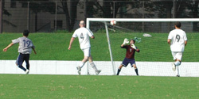

|
Hodogaya Park, Saturday 6th September,
Wednesday the 10th was the date on the whole teams lips pre match. The date of course that the Physicists at CERN were due to flip the switch on the Large Hadron Collider sending subatomic particles whizzing around a 17 mile ring somewhere under the earth of Geneva. The debate was heated as the older guys put in contact lenses and strapped themselves into orthopedic knee braces while the youngsters were mostly rehydrating and wondering whether to tell the older guys that their wives had been padding their housekeeping in the Swingers bar in Shinjuku the night before.
Some, mostly defenders funnily enough, sided with Stephen Hawking on this; The Collider not Wife Swapping, I must stress. The Professors take on the latter is not known, at least to me. Dickie argued that recreating the conditions existing 1 trillionth of a second after Big Bang would answer all the questions that have plagued Mankind about Creation since, well, Creation. Anthony countered that the risk that high energy protons crashing together at virtually the speed of light would create a Black Hole was too great. After playing his now customary 13 minutes, Anthony continued the argument on the sidelines, conjuring up an image of a tiny black hole appearing in the middle of the Indian Ocean and inexorably swallowing up the whole planet
This image seemed to galvanize the whole team. Matt, ever the opportunist, except in the penalty area some might argue, put a bet on. He wagered ichi-man that the world would end on Friday. I gave him 7 gerzillion to one as long as he paid in advance. Bless him. Tyson, ever the Patriot, wondered whether the Collider was a WMD and started making furtive phone calls to mentally challenged Texans. By half time US forces were being mobilized but apparently unable to deploy; nobody seemed to know exactly whereabouts Switzerland was in the Middle East
All of this suddenly paled into insignificance as it dawned on the longer serving members of the team that, if a Black Hole should appear in the Indian Ocean, and should that Black Hole start swallowing up all Matter until Earth was swallowed up and it and us were sent back whence we came; Then this would be our last ever chance to beat Sala. Our 10th and- unless the rate of Matter swallowing was pitifully slow and would take months to reach Tokyo; or, more likely perhaps; even a Black Hole would spit out Chiba on account of some sort of agreement between black holes that they wouldn't swallow each other and Sid could book us a pitch there so that we could play the return fixture next January- final chance to beat Sala. Worse still, every YCAC mans nightmare; we are playing Sala for the 11th time next January in Chiba, having lost this one. The Black Hole swallows the whole world except Chiba so we are left there, floating around space, unable to beat Sala for all eternity. Either way, the prospect was unbearable. We couldnt allow this. We had to beat Sala this time
So we did, beat Sala that is, 4-0 actually, and now the World can end. I couldn't give a rats ar$e. I'll get swallowed up a happy man.
Report by Steve Taw
|